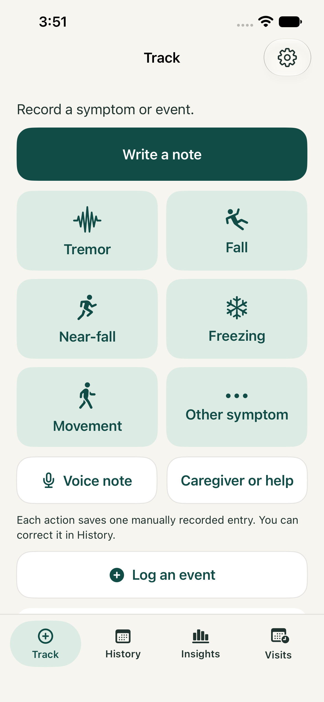
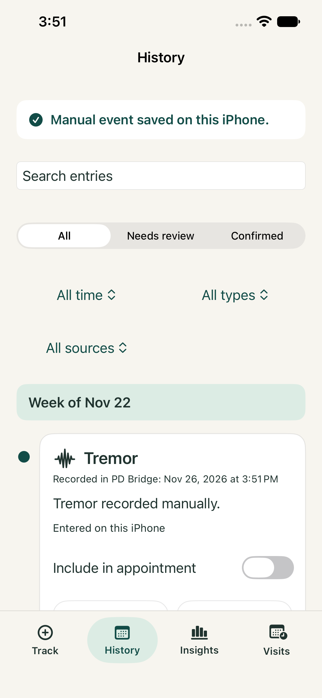
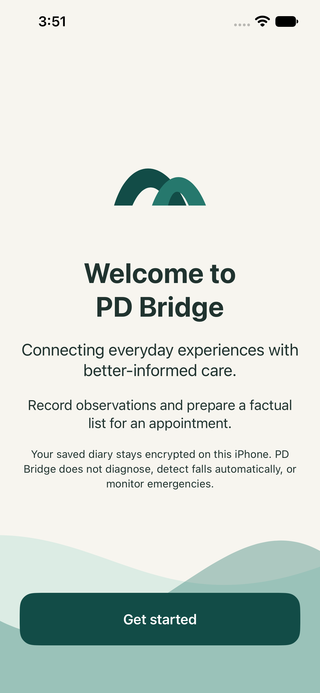
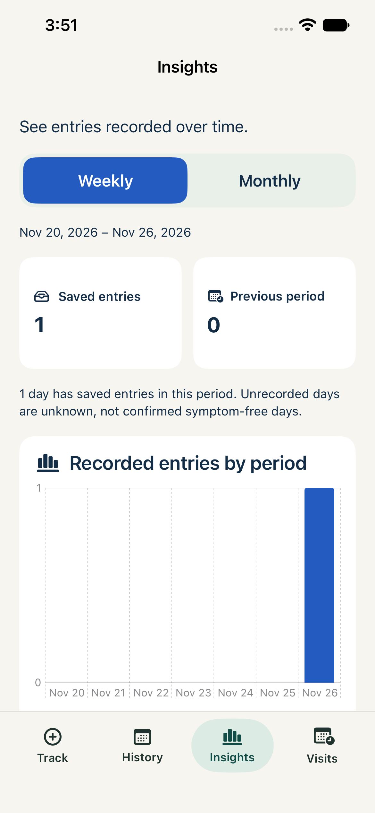
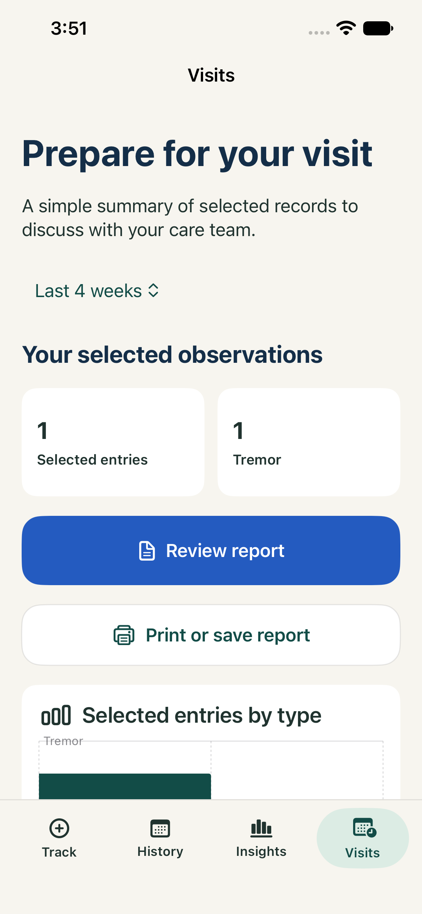
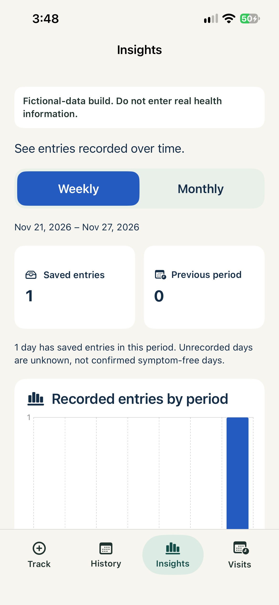
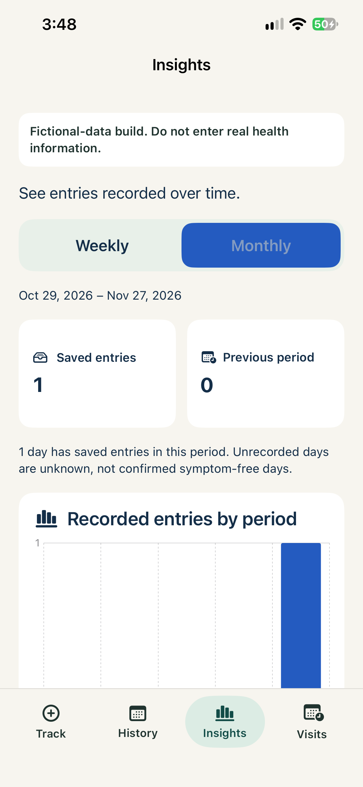
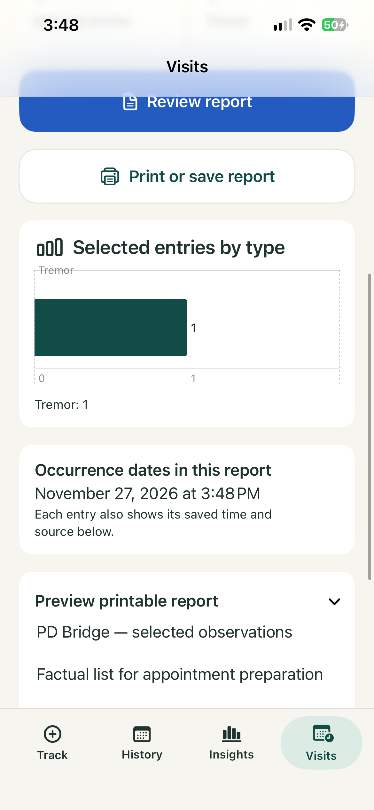
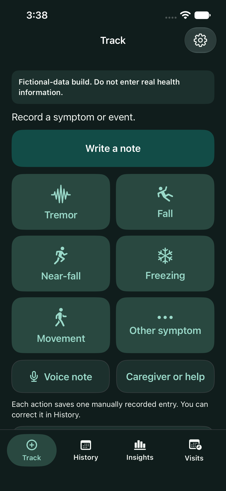

01
Capture
Write an observation or manually log tremor, fall, near-fall, freezing, movement or another symptom. The native app also includes an optional voice-note flow with explicit recording, review, and save steps.
Independent product / native iPhone app
PD Bridge is an accessibility-focused iPhone application I’m building to help people living with Parkinson’s capture everyday observations, revisit important moments, and prepare for conversations with their care teams.
The aim is to remember what happened without making recording it another daily responsibility.

01 / The problem
A change worth mentioning can be easy to lose among ordinary days. By the time an appointment arrives, remembering when something happened and which details matter may take more effort than expected.
I framed PD Bridge around a simple question: could a person record only the moments they choose, keep their own words intact, and arrive with a record they can review themselves?
This is a design premise, not a claim about measured patient outcomes.02 / Product experience
Four connected destinations keep capture lightweight and leave interpretation with the person reviewing the record.
Write an observation or manually log tremor, fall, near-fall, freezing, movement or another symptom. The native app also includes an optional voice-note flow with explicit recording, review, and save steps.
Search and revisit saved entries. Corrections keep earlier wording available, so an edit adds clarity without silently rewriting what was originally recorded.

Select relevant observations, review what is included, and open the report workflow. The person decides what belongs in the conversation.

03 / Brand and design system
The founder-approved A+B direction pairs a warm patient-facing diary with blue local Insights and report actions. Every image here is an actual iPhone 14 simulator capture of fictional data, not a generated concept.

The connected arches stand for the bridge between everyday observations and a better prepared appointment. Teal, sage and ivory support recording; navy and blue identify charts and report review.
The diagrams and screenshots describe a pre-release app. Local analytics count recorded entries; unrecorded days are unknown. Charts are not clinical interpretation.



04 / Product decisions
There is no compulsory daily score. A moment can be recorded when the person chooses.
History retains correction context and searches earlier wording.
Unicode text is stored as written. Draft Gujarati, Hindi, and Urdu interface resources still need fluent review.
Clear controls, larger-text layouts, Comfort Mode, and visible feedback shape the interface. Formal evaluation remains open.
Observations live in an AES-GCM encrypted local vault with a device-only Keychain key.
The app organizes selected entries. It does not turn them into medical advice.
05 / Engineering & iteration
The strongest improvements came from testing interaction paths, then narrowing the design until they behaved reliably.
Visual review exposed pale text on light surfaces, weak toggle affordances, and controls competing with bottom navigation. I revised contrast, control styling, scrolling, and safe-area spacing.
Moving between tabs could leave the keyboard covering the next view. Navigation was adjusted to dismiss editing before switching context.
Physical iPhone tests could open and cancel the system contact picker, but selecting a contact did not reliably return one to the app. V1 uses transient manual name and number entry, validation, explicit review, and cancellation that clears both fields. Calling requires a separate action.
06 / Technical implementation
Capture an entry, protect it on-device, then choose what appears in an appointment report.
Voice recordings are reviewed before saving and can be played back from saved entries. Generic local reminders are scheduled through iOS. Neither path sends observations to a cloud service.
The redesigned build has passed a focused appointment-selection walkthrough on a physical iPhone 14. That UI test used an isolated test store, so it does not verify the ordinary user vault under device lock. WatchConnectivity delivery and spoken VoiceOver review of this build remain open.
07 / Device verification · 27 November 2026
PD Bridge was installed and launched on an iPhone 14 running iOS 27.2.1. A focused XCUITest created a fictional tremor entry, included it in an appointment, terminated and relaunched the app, then verified that one entry remained selected and that the report preview contained the same fictional wording. Six screenshots below are direct captures from that physical phone.
The public GitHub Actions run for PR #6 also passed the iPhone-only package check, native contract checks, and unsigned iPhone Release build. The focused test was strengthened after an earlier assertion passed without proving that the entry had actually been selected.
This was one focused functional test using an isolated UI-test store, not a complete product review. It does not verify the normal user vault's encryption on physical hardware, behavior while the phone is locked, voice recording, reminder delivery, VoiceOver, or WatchConnectivity. The dark screenshot is from an iPhone simulator. Previous founder-reported checks are described separately and are not independent validation. All displayed observations are fictional.







08 / What I learned
Keeping capture optional meant resisting another daily task. Preserving original wording meant designing correction as history, not replacement. The caregiver picker problem made reliability more valuable than a polished shortcut, so the first release uses a smaller manual flow I could test end to end.